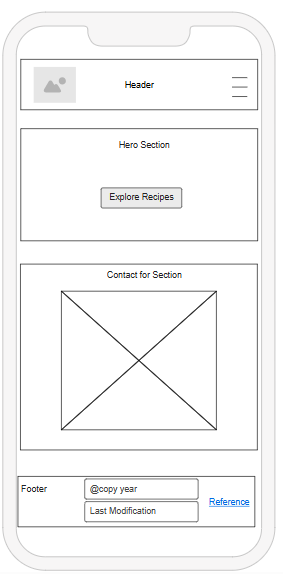
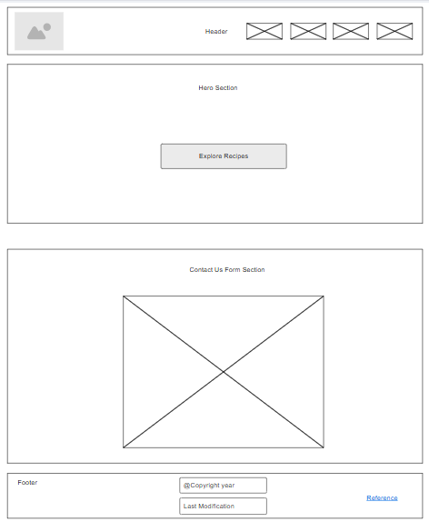

Quick Recipes - Website Plan
Site Name
Quick Recipes - A visually engaging, user-friendly site to quickly find simple, fast meals for any time of day. The name was chosen because it clearly reflects the core purpose of the website: quick, easy-to-follow recipes for busy users.
Site Purpose
The Quick Recipes site helps users discover fast, healthy, and delicious meals. It offers:
- Recipe discovery with filters for meal types (breakfast, lunch, dinner)
- Detailed pages for each recipe with ingredients, steps, and a cooking video
- Tips for healthy eating and efficient cooking
- A way to make choice meals favourite and to save preferred recipes and tips using localStorage
- A contact form to gather user feedback or questions
Scenarios
- “I'm short on time, what are some fast recipes I can cook for dinner tonight?”
- “Can I save my favorite recipes and come back to them later?”
- “Where can I find tips to make meal prepping easier during the week?”
Color Schema
The site uses two main colors:
- Dark Red for headings, buttons, and accents -
- Warm Beige as background -
- black as text color -
- White as background for card -
Typography
- Headings: "Playfair Display" - provides a classy, food-magazine-style look
- Body Text: "Nunito" - a fine and clean, readable sans-serif font
Wireframe
These are basic wireframes representing the structure of the homepage.
Mobile View

Desktop View
